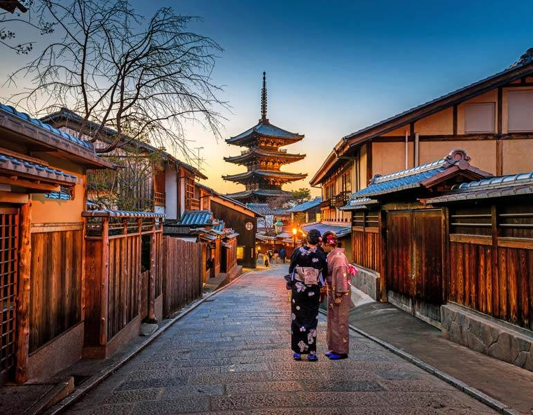

Japan, island country lying off the east coast of Asia. It consists of a great string of islands in a northeast-southwest arc that stretches for approximately 1,500 miles (2,400 km) through the western North Pacific Ocean. Nearly the entire land area is taken up by the country’s four main islands; from north to south these are Hokkaido (Hokkaidō), Honshu (Honshū), Shikoku, and Kyushu (Kyūshū). Honshu is the largest of the four, followed in size by Hokkaido, Kyushu, and Shikoku. In addition, there are numerous smaller islands, the major groups of which are the Ryukyu (Nansei) Islands (including the island of Okinawa) to the south and west of Kyushu and the Izu, Bonin (Ogasawara), and Volcano (Kazan) islands to the south and east of central Honshu. The national capital, Tokyo (Tōkyō), in east-central Honshu, is one of the world’s most populous cities.
 Home page129-085-856
48mesquad.dr